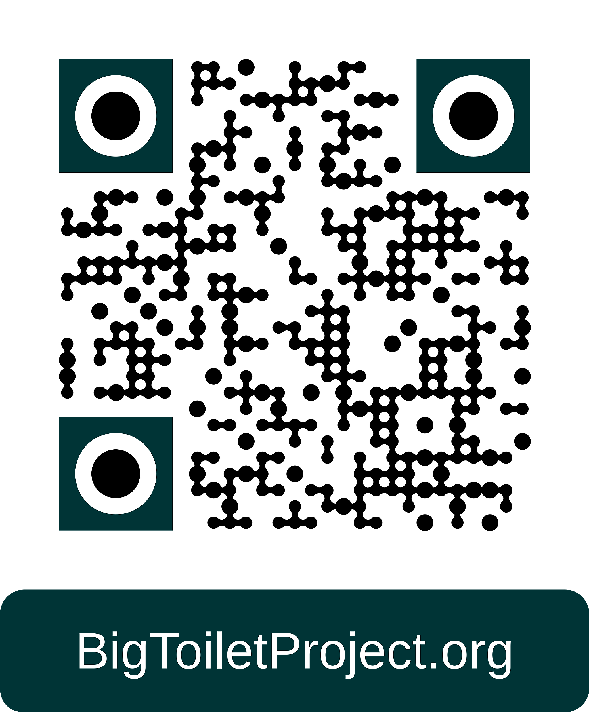

Make Science Happen!
If you are a parent or adult responsible for making decisions about toilet training a child, take the Big Toilet Survey and start a Toilet Training Diary to help us understand the challenges. Let's reduce baby-diaper waste and plastic pollution together.
Flush Rush: Pinch the poo and drop it in the toilet. Catch as many in a row as you can for the biggest streak!